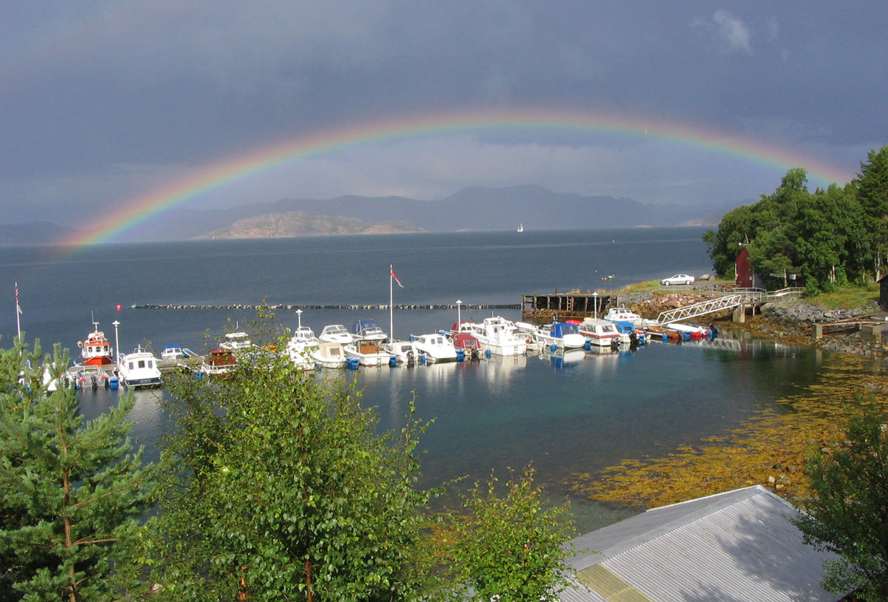

Heimsjø Marina er en idyllisk båthavn med utleieplasser, strategisk plassert ytterst i Hemnefjorden. Her kombinerer vi praktiske fasiliteter med en unik nærhet til kystnaturen.
Havnen ligger i et naturskjønt område med unike muligheter for turer i skog og mark, samt jakt og fiske. Kun en kort spasertur unna finner du Heimsvatnet, Hemnes fineste badestrand.
For de båtfarende er veien kort til populære friluftsområder som Røstøya, Magerøya, Stamnesøya, Ytterøya og Jamtøya.